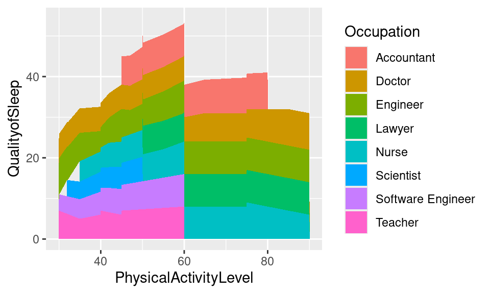
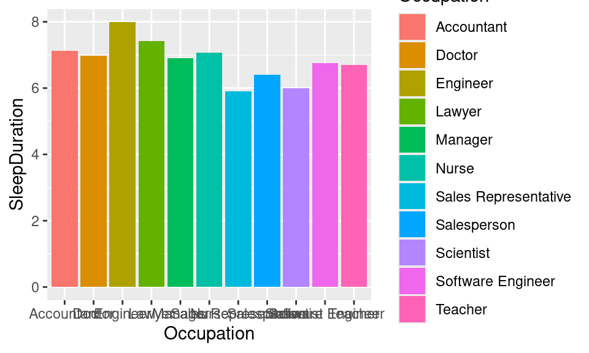

Maddie Flint, Katy Carter, Michael Hankins, Allan Akkathara
Published
May 6, 2024
How You Can Sleep Better: A Data Analysis
Attaching package: 'dplyr'
The following objects are masked from 'package:stats':
filter, lag
The following objects are masked from 'package:base':
intersect, setdiff, setequal, union
library(tidyr)
Rows: 374 Columns: 13
── Column specification ────────────────────────────────────────────────────────
Delimiter: ","
chr (5): Gender, Occupation, BMICategory, BloodPressure, SleepDisorder
dbl (8): PersonID, Age, SleepDuration, QualityofSleep, PhysicalActivityLevel...
ℹ Use `spec()` to retrieve the full column specification for this data.
ℹ Specify the column types or set `show_col_types = FALSE` to quiet this message.
# A tibble: 374 × 13
PersonID Gender Age Occupation SleepDuration QualityofSleep
<dbl> <chr> <dbl> <chr> <dbl> <dbl>
1 1 Male 27 Software Engineer 6.1 6
2 2 Male 28 Doctor 6.2 6
3 3 Male 28 Doctor 6.2 6
4 4 Male 28 Sales Representative 5.9 4
5 5 Male 28 Sales Representative 5.9 4
6 6 Male 28 Software Engineer 5.9 4
7 7 Male 29 Teacher 6.3 6
8 8 Male 29 Doctor 7.8 7
9 9 Male 29 Doctor 7.8 7
10 10 Male 29 Doctor 7.8 7
# ℹ 364 more rows
# ℹ 7 more variables: PhysicalActivityLevel <dbl>, StressLevel <dbl>,
# BMICategory <chr>, BloodPressure <chr>, HeartRate <dbl>, DailySteps <dbl>,
# SleepDisorder <chr>
Bind Chart
Stacked Chart

Tile Chart
Rows: 374 Columns: 13
── Column specification ────────────────────────────────────────────────────────
Delimiter: ","
chr (5): Gender, Occupation, BMICategory, BloodPressure, SleepDisorder
dbl (8): PersonID, Age, SleepDuration, QualityofSleep, PhysicalActivityLevel...
ℹ Use `spec()` to retrieve the full column specification for this data.
ℹ Specify the column types or set `show_col_types = FALSE` to quiet this message.
Line Chart
DensityChart
Violin Chart
Warning: Groups with fewer than two datapoints have been dropped.
ℹ Set `drop = FALSE` to consider such groups for position adjustment purposes.
Groups with fewer than two datapoints have been dropped.
ℹ Set `drop = FALSE` to consider such groups for position adjustment purposes.
Average Quality of Sleep by Gender
Warning: The `fun.y` argument of `stat_summary()` is deprecated as of ggplot2 3.3.0.
ℹ Please use the `fun` argument instead.
Average Time Slept by Gender
Average Quality of Sleep by Occupation
Averge Time Slept by Occupation

Average Time Slept by Sleep Disorder
Correlogram
Attaching package: 'ellipse'
The following object is masked from 'package:graphics':
pairs
Rows: 374 Columns: 13
── Column specification ────────────────────────────────────────────────────────
Delimiter: ","
chr (5): Gender, Occupation, BMICategory, BloodPressure, SleepDisorder
dbl (8): PersonID, Age, SleepDuration, QualityofSleep, PhysicalActivityLevel...
ℹ Use `spec()` to retrieve the full column specification for this data.
ℹ Specify the column types or set `show_col_types = FALSE` to quiet this message.
#Transform datasleep_data <- sleep_data |>mutate(Gender =as.factor(Gender), #Gender as factorAge =as.factor(Age),Occupation =as.factor(Occupation), #Occupation as factorBMICategory =as.factor(BMICategory), #BMI as factorSleepDisorder =ifelse(SleepDisorder =='None', FALSE, TRUE), #presence of sleep disorder as booleanSleepDisorder =as.factor(SleepDisorder) #boolean sleep disorder as factor ) sleep_data <- sleep_data |>mutate(BloodPressure =str_replace_all(BloodPressure, "/.*", ""), #only use systolic bp to determine high/low bpBloodPressure =as.numeric(BloodPressure)) #convert string to numeric#split data into training and test setsset.seed(123) # for reproducibilitytrain_indices <-sample(nrow(sleep_data), 0.7*nrow(sleep_data)) # 70% for trainingsleep_train <- sleep_data[train_indices, ]sleep_test <- sleep_data[-train_indices, ]head(sleep_train)
# Age & Sleep Qualitylogistic_model_asq <-logistic_reg() |>set_engine("glm") |>set_mode("classification")# Define the recipe with both BMI and BloodPressurerec_asq <-recipe(SleepDisorder ~ Age + QualityofSleep, data = sleep_train)# Perform cross-validationcv_results_asq <-workflow() %>%add_recipe(rec_asq) %>%add_model(logistic_model_asq) %>%fit_resamples(resamples = fold)
→ A | error: factor Age has new levels 27
#predictionrec_asq_predict <-recipe(SleepDisorder ~ Age + QualityofSleep, data = sleep_test)asq_prediction <-workflow() |>add_recipe(rec_asq_predict) |>add_model(logistic_model_asq)fit_asq_prediction <-fit(asq_prediction, data = sleep_train)predict_asq <-predict(fit_asq_prediction, new_data = sleep_test)head(predict_asq)
The following object is masked from 'package:ggplot2':
last_plot
The following object is masked from 'package:stats':
filter
The following object is masked from 'package:graphics':
layout
Rows: 374 Columns: 13
── Column specification ────────────────────────────────────────────────────────
Delimiter: ","
chr (5): Gender, Occupation, BMICategory, BloodPressure, SleepDisorder
dbl (8): PersonID, Age, SleepDuration, QualityofSleep, PhysicalActivityLevel...
ℹ Use `spec()` to retrieve the full column specification for this data.
ℹ Specify the column types or set `show_col_types = FALSE` to quiet this message.
Occupation that pops up the most on our dataset.
Linear Regression on Sleep Duration and Quality of Sleep